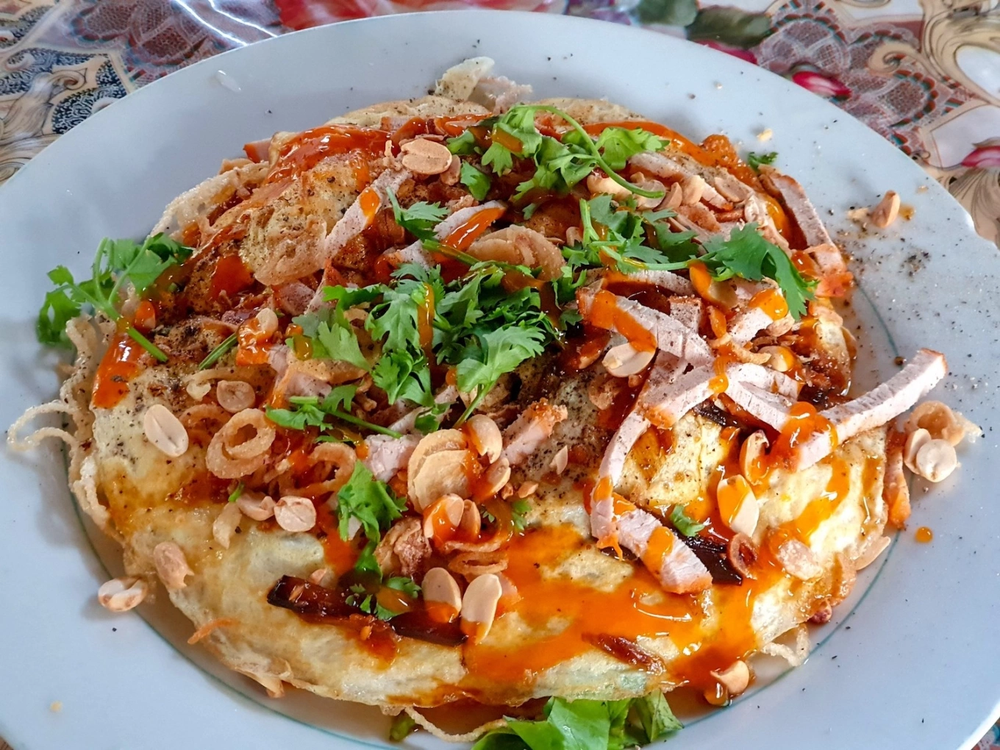

Một món ăn khiến nhiều du khách tò mò ngay từ tên gọi: phần hủ tiếu chiên giòn được biến tấu như một chiếc pizza, phủ topping bắt mắt và mang lại trải nghiệm vừa quen vừa lạ rất riêng của Tây Đô.
Điểm thú vị của món này nằm ở cách biến hủ tiếu truyền thống thành một phiên bản giòn rụm, vui mắt và rất dễ gây ấn tượng với du khách lần đầu đến Cần Thơ. Nó vừa mang nét sáng tạo, vừa giữ được cảm giác gần gũi của nguyên liệu miền Tây.
Không ít người tìm đến Sáu Hoài không chỉ để ăn, mà còn để xem cách người ta chiên bánh, xếp topping và hoàn thiện món ăn ngay tại chỗ. Chính quá trình ấy làm trải nghiệm trở nên sinh động hơn nhiều so với một món ăn thông thường.

Phần hủ tiếu được chiên giòn rồi thêm topping giúp món ăn có diện mạo rất khác với hủ tiếu quen thuộc.
Bề mặt nhiều màu sắc, hình dáng lạ mắt và cảm giác "đặc sản chỉ có ở đây" khiến món rất lên hình.
Bạn có thể ghé sau khi tham quan chợ nổi hoặc kết hợp với hành trình khám phá ẩm thực trong thành phố.
Không phải món ăn nào nổi tiếng cũng vì hương vị quá cầu kỳ. Với Pizza Hủ Tiếu Sáu Hoài, sức hút còn đến từ cảm giác mới lạ, cách trình bày vui mắt và việc món ăn gắn với ký ức du lịch của rất nhiều người khi ghé Cần Thơ.
Từ nguyên liệu quen thuộc là hủ tiếu, món ăn được làm mới theo cách dễ nhớ, dễ kể lại và tạo cảm giác rất riêng.
Từ khách trẻ thích chụp ảnh đến gia đình muốn thử món địa phương, ai cũng có thể thấy món này thú vị.
Ăn ngon là một phần, nhưng xem quy trình chế biến và không khí quán mới là điều khiến nhiều người nhớ lâu.
Nếu muốn chuyến ghé thăm thú vị hơn, bạn có thể đi theo nhịp dưới đây để vừa có hình đẹp, vừa có trải nghiệm trọn vẹn thay vì chỉ ăn rồi rời đi ngay.
Khoảnh khắc hủ tiếu được chiên và hoàn thiện topping thường là phần thú vị nhất để xem trực tiếp.
Lúc này món còn nóng, giòn và màu sắc cũng lên đẹp nhất nếu bạn muốn thêm ảnh cho website.
Đi theo nhóm sẽ dễ gọi thêm món phụ khác để so sánh hương vị và trải nghiệm đa dạng hơn.
Bạn có thể nối trải nghiệm này với chợ nổi, bến Ninh Kiều hoặc một hành trình ẩm thực trong ngày.
Nếu bạn thấy website hữu ích, hãy ủng hộ một ly cà phê để nhóm có thêm động lực phát triển.
 Quét mã QR hoặc nhấn vào ảnh để ủng hộ.
Quét mã QR hoặc nhấn vào ảnh để ủng hộ.
Đánh giá từ du khách
Hãy chia sẻ cảm nhận của bạn về Pizza Hủ Tiếu Sáu Hoài để những người ghé sau có thêm gợi ý nhé.